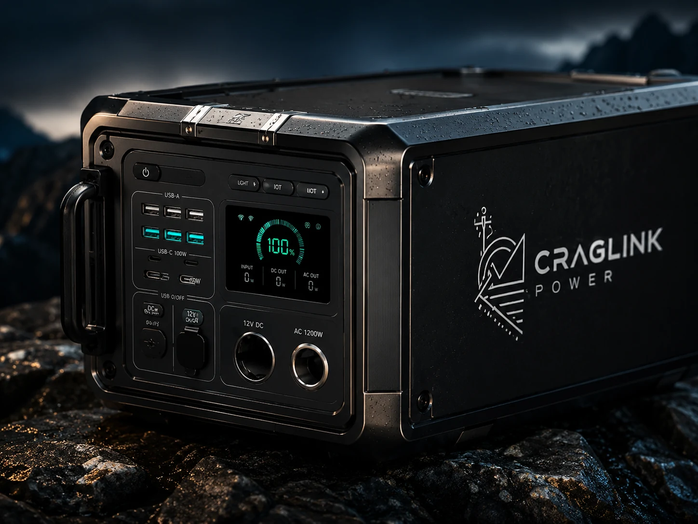

DC-native remote connectivity power
Stay online
where the
road ends.
BaseRelay is building a field-tested control standard for remote internet power: simple DC-first configurations, clear setup guidance, and validation data before broad sale.
Field-validation first.
BaseRelay is being shaped around the constraints that actually break remote internet power: cable loss, confusing setup, weather, charging windows, and unsupported gear combinations.
Read validation plan →betaControlled validation
DC kitFirst pilot path
laterAfter proof
“The strongest version is not a box. It is the trusted setup that keeps the connection alive.”
BaseRelay control doctrinePower that moves with you
Start simple.
Scale only after proof.
The first BaseRelay path is a Core DC Kit plus Control Standard: approved-source guidance, protected delivery, setup instructions, test logs, and a clean claims record before any battery inventory.
Stage 3
Solar LitePlanned after the core path and power-source list are validated.Stage 4
Vehicle kitDeferred until charging behavior, fusing, and misuse cases are tested.
Stage 1
Core DC KitThe lowest-risk first pilot: clear supported configurations and field logs.Stage 2
Approved bundleThird-party power-source bundles only after warranty, support, and documentation gates.Compatibility and runtime statements are backed by testing, not guesswork.
Core kit first; battery, solar, vehicle, and integrated systems only when validated.
DC-first delivery reduces unnecessary conversion steps and setup confusion.
Every configuration needs clear setup, support boundaries, and a failure log.
Founder validation access
Help prove the setup.
Join the BaseRelay validation list for product updates, tester opportunities, and the first controlled pilot invitations. No hardware is being sold through this page.